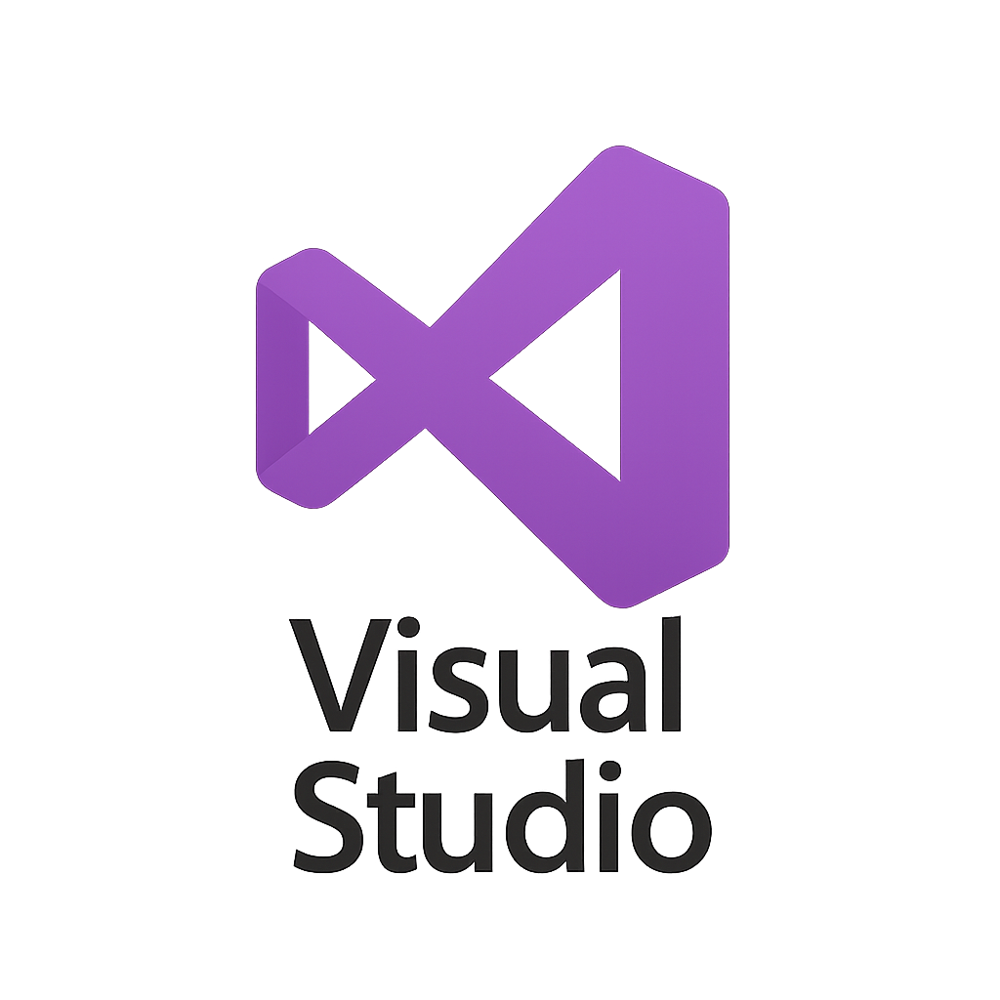

-
Présentation
Bienvenue sur mon portfolio -
Parcours scolaire
En savoir plus sur mon parcours scolaire -
Groupe SRA
SRA, expert en gestion et digitalisation des entreprises : intégration de solutions de gestion, infrastructure IT et inbound marketing.
Présentation Groupe SRA
SRA Informatique est une entreprise française spécialisée dans l'intégration de solutions de gestion pour les entreprises. Fondée en 1984 et basée à Bron, près de Lyon, elle accompagne depuis plus de 40 ans les PME, ETI et groupes internationaux dans leur transformation digitale.
- Intégration de logiciels de gestion : ERP (Sage X3, Sage 100, Cegid), CRM, SIRH, gestion de la paie(SILAE,CEGID,LUCCA), comptabilité/finance
- Solutions cloud et hébergement : infrastructures sécurisées et flexibles.
- Business Intelligence et reporting : outils de pilotage comme Power BI.
- Dématérialisation et GED : avec des partenaires comme Zeendoc.
- Cybersécurité, mobilité, sites web et extranet.
-
Mes Compétences
Langages de programmation Maitrisés -
Outils
Outils MaitrisésVisual Studio – IDE Développement en .NET, C#, ASP.NET. DBeaver – Interface graphique pour bases de données
DBeaver – Interface graphique pour bases de données -
Projets
Mes projets en entrepriseProjet Paie
Contrôle de cohérence des rubriques de paie pour garantir leur unicité entre deux environnements.

Texte descriptif 2

Texte descriptif 3

Texte descriptif 4
{kind=link}
{kind=link}
{kind=link}
{kind=link}
{kind=link}
{kind=link}
{kind=link}
{kind=link}
{kind=link}
{kind=link}
{kind=link}
{kind=link}
{kind=link}
{kind=link}